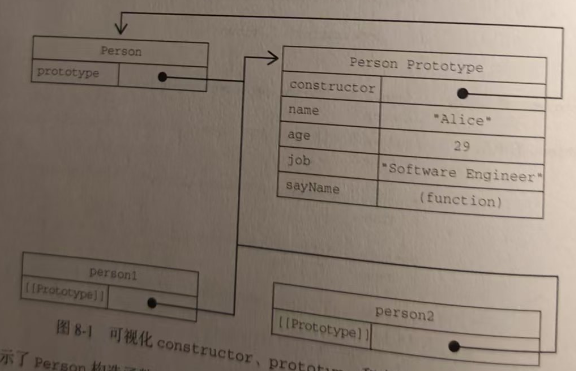

——————————————————————————————————————————————————————————————————————————————————
概念 代码片段
--------------------------------------------------------------------------------------------------------------------------------------------------------------------
构造函数声明于函数表达式 function Person() { } //这两个选一个就可以了 , 都是一样的
let Person = function () { }
构造函数的prototype对象
console.log(typeof Person.prototype); //object
console.log(Person.prototype);
/* {
constructor: f Person() 指向Person自身
[[prototype]]: Object 内部指向Object.prototype
} */
构造函数与prototype对象间的 console.log(Person.prototype.constructor === Person); // true constructor 指回创建的函数
循环引用
原型链终止于Object的原型 console.log(Person.prototype.__proto__ === Object.prototype); // true
console.log(Person.prototype.__proto__.constructor === Object); // true
console.log(Person.prototype.__proto__.__proto__ === null);
//true 因为所以对象都是继承Object,所以他是最高的 , 在往上找继承构造函数的原型对象,没有了就返回null
console.log(Person.prototype.__proto__); //打印Object的原型对象
/* {
__defineGetter__:
ƒ, __defineSetter__:
ƒ, hasOwnProperty:
ƒ, __lookupGetter__:
ƒ, __lookupSetter__:
ƒ, …
} */
创建构造函数的实例 let person1 = new Person,
person2 = new Person
区分对象实例,构造函数实例,以及 console.log(person1 != person2); //true 都不是同一个地址值,是独立的两个对象
prototype对象
console.log(person1 != Person.prototype); //true p1是独立对象 , Person.prototype是构造函数的原型对象
console.log(Person.prototype !== Person); //true 肯定啊一个是原型对象 一个是函数 地址值都不一样
实例constuctor 和 prototype console.log(person1.__proto__ === Person.prototype); // true 都是指向Person的原型对象
的关系
console.log(person1.__proto__.constructor === Person); //true 原型对象里面的constructor指回函数
实例共享同一个prototype console.log(person1.__proto__ === person2.__proto__); //true 都是同一个函数创建的原型对象自然也一样
使用instanceof 操作符 console.log(person1 instanceof Person); //Person的原型对像,出现在了person1的原型链身上,不然__proto__就没用了
console.log(person1 instanceof Object); //Object是所以引用值继承的最终的对象 ,只要你是引用值,就一定有
console.log(Person.prototype instanceof Object); //也是一样的即使你是原型对象 , 你的原型链还是有Object的
——————————————————————————————————————————————————————————————————————————————————
-
解释点 1
function Person() { }
let Person = function () { }
这两个选一个就可以了 , 都是一样的 都是创建函数, 没什么区别
-
解释点 2
{
constructor: f Person() 指向Person自身
__proto__:
}
和
{
constructor: f Person() 指向Person自身
[[prototype]]: Object 内部指向Object.prototype
}
书里的是想让那些不追求细节的开发者 ,快速看懂 , 但是准确的应该是[[prototype]] 因为控制塔也是这么输出的
第二点是因为每个对象都是有[[prototype]]属性的,指向继承的父对象
__proto__ : 最终还是-> [[set]] ->会内部调用[[prototype]]这个内部属性 , 然后从[[prototype]]在修改继承的对象
-
配合书上的图片看

展示了Person构造函数，Person, Person的原型对象 和 Person 现在有两个实例之间的关系 ， 主要Perosn.prototype指向原型对象，
而Person.prototype.constructor指回 Person 构造函数（ 函数 ）。原型对象包含 constructor 属性和其他后来添加的属性 。 person1 和
person2
都有一个内部属性 [[prototype]] 指回Person.prototype , 而且两者都与构造函数没有直接联系。另外要注意的是
，虽然这两个实例都没有属性和方法，但person1。sayName() 可以
正常调用，这是由于对象查找机制机制的原因
虽然不是所有实列都[[Prototype]] , 但可以使用isPrototyperOf()方法确定两个对象之间的这种关系。本质上.isPrototypeOf()
会在传入参数的[[Prototype]]指向调用它的对象时返回true
-
ECMAscript的Object 类型有一个方法叫 Object.getPrototypeOf() , 返回参数的内部特性[[Pertotype]]的值
Object.getPrototypeOf() 是 JavaScript 中专门用于获取对象的 [[Prototype]] 内部属性的标准方法，它返回的就是对象实际继承的原型对象。
例如：
function Person() {
Person.prototype.name = 'Arrebol'
}
console.log(Object.getPrototypeOf(person1) === Person.prototype); // true person1实例对象的[[prototype]] 是指向构造函数的原型对象
console.log(Object.getPrototypeOf(person1).name); // Arrebol
第一行代码简单确认了 Object.getPrototypeOf() 返回的对象就是传入对象的原型对象。第二行代码使用Object.getPrototypeOf()可以很方便的取得一个对象的原型
而在这里通过原型实现继承时显得尤为重要
-
Object类型 还有一个 setPrototypeOf() 可以向实例的私有特性[[Prototype]] 写入一个新值。这样就可以重写一个对象的原型继承关系
let biped = {
numLeges: 2
}
let person = {
name: 'Matt'
}
Object.setPrototypeOf(person, biped) //person 继承对象为biped
console.log(person.name); // 自己的属性肯定能访问
console.log(person.numLeges); // 父对象的属性,因为继承了 ,也能访问
console.log(Object.getPrototypeOf(person) === biped); // 继承的是biped 所以是相等的
介绍一下 setPrototypeOf() 将person的[[prototype]]指向biped 修改了继承对象 , 第一个值的继承对像 , 会被改为第二个值,
Object.setPrototypeOf() 可能会严重影响代码的性能 , 因为修改继承关系是微妙且深远的 ,
因为会涉及那些会访问[[prototype]]的代码影响是很大的 , 所以接下来要讲Object.create()
-
Object.create()
Object.create()基于指定的继承对象,然后创建一个新的
console.log('==================================== Object.create ==========================================');
let Biped = {
numLeges: 8
}
let per = Object.create(Biped)
per.name = 'Arrebol'
console.log(per);
console.log(per.name); // Arrebol
console.log(per.numLeges); // 8
console.log(Object.getPrototypeOf(per) === Biped); //true
基于Biped为继承对象 , 创建了一个per的对象 , 所以可以使用Biped里面的属性和方法